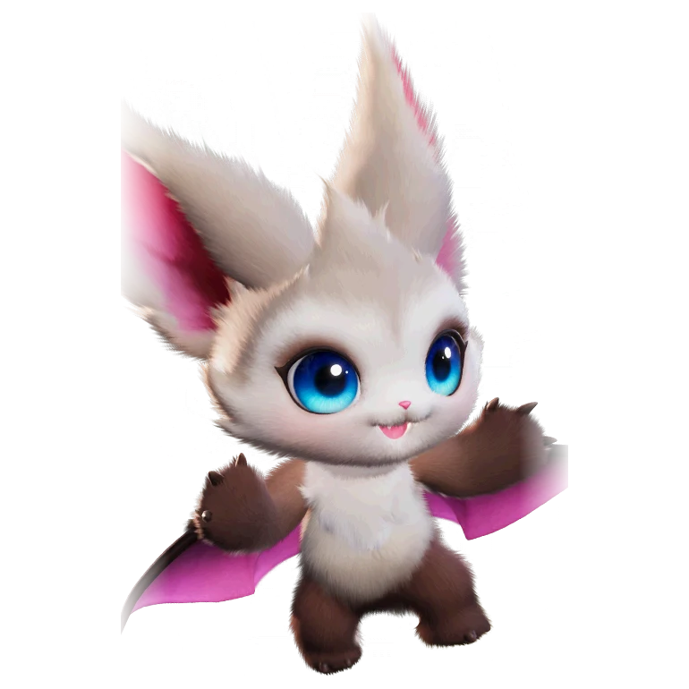

รายชื่อ Aniimo › #031

ค้างคาวจิ๋ว (Eko)
#031ธาตุลมLuminSupportTier A
ด้วยหูขนาดใหญ่ที่ตั้งตรง พวกมันจึงไวต่อเสียงเป็นอย่างมาก พวกมันจะไม่พลาดทุกการเคลื่อนไหวที่ดึงดูดความสนใจ ไม่ว่าจะใกล้หรือไกลก็ตาม
ดูรายละเอียดเต็ม ร่างพิเศษ และร่างเปล่งประกายค่าสถานะพื้นฐาน
| HP | 70 |
|---|---|
| ATK | 108 |
| P.DEF | 70 |
| M.DEF | 57 |
| REGEN | 80 |
| BREAK | 42 |
สกิล
| โจมตีปกติ | ATK ลม ใช้พลังแห่งลมโจมตีเป้าหมายในระยะใกล้ |
| สกิล 1 | Arc Strike ลม กวาดโจมตีเป็นวงโค้ง เมื่อโจมตีศัตรูที่ได้รับผลจาก [ตราจุดอ่อน] จะติดสถานะ [มึนงง] เพิ่มเป็นเวลา 2.5 วินาที |
| สกิล 2 | Sonar Attack ลม ยิงคลื่นโซนาร์เป็นรูปกรวย ทำดาเมจเป้าหมายในระยะ 10 ครั้ง ครั้งสุดท้ายติด Weakness Mark ลดอัตราต้านคริติคอลของเป้าหมาย 12% (+1.1% ต่อ ATK 100 สูงสุด 21%) เป็นเวลา 5 วินาที |
สายวิวัฒนาการ
- ค้างคาวจิ๋ว → ค้างคาวนักสืบ (แอนีโมเลเวล 25, ศักยภาพโจมตีจากที่ได้รับเท่ากับ 6 หรือมากกว่า)
จุดเกิด
- Forest of Falling Stars Lv. 20–25
Held Item ที่แนะนำ
- Spirited Feather แอนีโมที่ติดตั้งจะได้รับพลังฟื้นฟูเพิ่ม 0.7 หน่วยต่อเลเวล
- Auspicious Bell เมื่อใช้สกิล มีโอกาส 20% ที่จะได้รับ 5 EP
งานใน Homeland
งานธาตุลม Lv.1, งานช่าง Lv.1